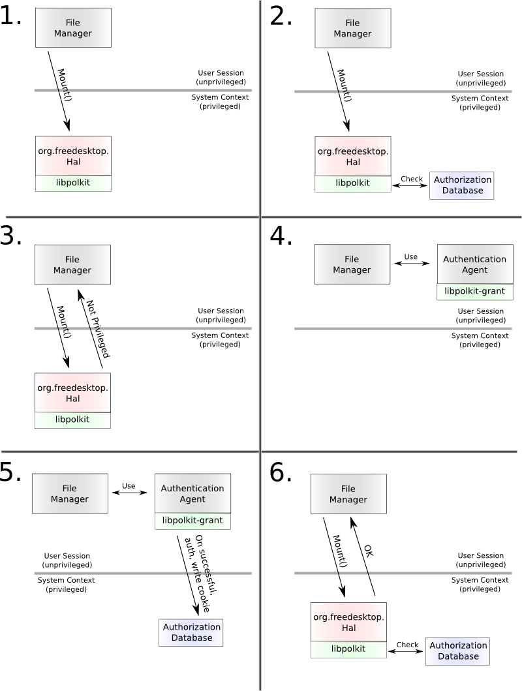

| PolicyKit Library Reference Manual |
|---|
The core of PolicyKit is implemented as a shared library that
Mechanisms can link to and use as the decider component. There's
a small set of (extensible) data structures that establish a
vocabulary for libpolkit and the Mechanism to
describe the Subject and Action in question. The Mechanism
should think about libpolkit as a black box;
it's sole purpose is to answer whether a given Subject is
permitted to do a specific Action. The answer, obviously, comes
from a configuration source read by the library and maintained
by the system administrator; see PolicyKit configuration
for details on PolicyKit configuration.
The answer from libpolkit is not limited to a
boolean value; essentially the following values can be returned
Yes: It is ok for the Mechanism to carry out the Action requsted by the given Subject.
No: The Mechanism should not carry out the Action requested by the given Subject.
Require authentication: The Subject (e.g. the UI application) needs to ask the user to authenticate in order for the Mechanism to carry out this Action.
In addition,
Authentication can be specified (in the return value
from libpolkit) as either user
authentication (user puts in his own password) or super
user authentication (user puts in the root password or a
user in an administrator group authenticates).
The authorization can be kept (this is also specified in
the return value from libpolkit) either
1) indefinitely (e.g. it persists across reboots and
different desktop sessions); 2) for the remainder of the
desktop session the Subject is part of; or 3) confined to
the process life-time of the Subject.
To facilitate the authentication step, there's a shared library
called libpolkit-grant. Given an Action, this
library uses a privileged helper (as in it's a setgid
polkit application) to authenticate the user (using
PAM) and upon successful authentication leave a cookie
specifying that the given Action can be carried out. It is the
presence and contents of this cookie that will
allow libpolkit to
return Yes when the Subject asks the
Mechanism to carry out the Action again. This whole process is
best explained by a diagram:

Detail on the diagram:
The user double clicks an icon on the desktop that resembles a hard drive. As mounting file systems is a privileged operation, the File Manager calls, via the system message bus, into the Mechanism (HAL).
The Mechanism identifies the caller, using ConsoleKit, all the relevant information about the caller and stores this information in a PolKitCaller object. This information includes
UNIX user id (uid)
UNIX process id (pid)
An identifier for the desktop session and whether the session is active (e.g. currently showing on a display), whether it's local and if it's remote, the address of the remote display
Optional OS specific attributes such as the SELinux security context.
Second, the Mechanism creates
a PolKitAction
object that represents the action that the caller wants
the Mechanism to perform on it's behalf. Specifically, for
HAL, the D-Bus method call Mount() maps
into two
actions: org.freedesktop.hal.storage.mount-fixed
and org.freedesktop.hal.storage.mount-removable. As
the device the user wants to mount is an internal hard
disk, HAL
picks org.freedesktop.hal.storage.mount-fixed
and constructs
the PolKitAction
object.
Third, HAL now calls
the polkit_context_can_caller_do_action()
function in libpolkit and passes
the PolKitAction
and PolKitCaller
objects as parameters. Armed with all this
information, libpolkit is now in a
position to make a decision; see
PolicyKit configuration for how exactly this is
done.
The result
from libpolkit is of the
type PolKitResult
and tells whether the given caller is allowed to do the
given action. If the result is yes
(e.g. POLKIT_RESULT_YES), the Mechanism carries out the
action on behalf of the caller.
If the result from libpolkit is not
yes, the Mechanism sends a reply back to the caller with
two pieces of information:
The result from libpolkit itself.
The action that the caller needs to be authorized to do.
For this example, HAL returns an exception via D-Bus with
the
name org.freedesktop.Hal.Device.PermissionDeniedByPolicy
and the detail text
string "org.freedesktop.hal.storage.mount-fixed
auth_admin_keep_always" (assuming the return code
was POLKIT_RESULT_AUTH_ADMIN_KEEP_ALWAYS). This enables
the caller to take action and acquire authorization to do
this action.
The File Manager receives the exception from the Mechanism
and since the exception
name org.freedesktop.Hal.Device.PermissionDeniedByPolicy
is well-defined it decodes the exception detail string to
learn that in order to do what the user asked it (by
double clicking an icon resembling a hard drive), it needs
to make the user authenticate as an administrator in order
to be authorized for the
action org.freedesktop.hal.storage.mount-fixed.
The File Manager now proceeds to call into an Authentication Agent and passes two items of information
The PolKitResult
that libpolkit returned to the
Mechanism and passed on to the File Manager.
The PolKitAction
that libpolkit returned to the
Mechanism and passed on to the File Manager.
In fact, the File Manager could implement an Authentication Agent by itself but for both practical reasons (implementing an Authentication Agent is not trivial) and security reasons (it is typically a good idea to have password handling in as few processes as possible) it is preferable to have this done in a separate process. PolicyKit defines an abstract interface to interact with the an Authentication Agent, see the Authentication Agent section for details. For details on the Authentication Agent for the GNOME desktop, please see the PolicyKit-gnome documentation.
The first thing that the Authentication Agent does when it receives a request from an application is to validate the incoming parameters to see if they are correct; essentially it's doing exactly the same check as the Mechanism was doing in step 2; e.g. constructing PolKitCaller and PolKitAction objects, calling into polkit_context_can_caller_do_action() and examining the returned PolKitResult.
If the parameters check out, the Authentication Agent now pops up a window to explain the user than authentication is required to perform the desired action. Note that the text to put in the dialog stems from files that are not under the users control (see the section called “Declaring Actions” for details) so there is no chance for any application to spoof the dialog to trick the user into agreeing to authenticate for something while in fact the authentication is about something else.
Internally the Authentication Agent uses services provided by the PolKitGrant class and is little more than a thin layer above the PAM user API. The authentication itself is performed in a privileged helper program (e.g. running with setgid privileges) that communicates with the (graphical) Authentication Agent through pipes. As such, if the user successfully authenticates, the privileged helper program writes an entry into the Authorization Database (it can do so only because it is privileged). When the user is done with the dialog (either through successful authentication or by cancelling) a reply including whether the authorization was gained is sent back to the File Manager
As mentioned, an authorization has a notion of scope which
is indicated in
the PolKitResult
value from libpolkit. The user, when
authenticating, can also opt to lessen the scope
(e.g. keep the authorization only for the remainder of his
desktop session instead of forever)
(see this
section for details) but he can never widen it -
this is checked and enforced by the privileged helper
program. The way the authorization is stored is as
follows:
For POLKIT_RESULT_AUTH_[SELF|ADMIN] the authorization is limited to the requesting process; in this example it would be the File Manager. Thus, the UNIX process id (and start time of the process to avoid clashes caused by pid recycling) is used as the primary key in the Authorization Database. Entries like these are flushed when the system is restarted.
For POLKIT_RESULT_AUTH_[SELF|ADMIN]_KEEP_SESSION the authorization is limited to processes in the same desktop session as the calling process (e.g. the File Manager). The ConsoleKit session identifier is used as the the primary key in the Authorization Database. Entries like these are also flushed when the system is restarted.
For POLKIT_RESULT_AUTH_[SELF|ADMIN]_KEEP_ALWAYS the authorization is limited to processes owned by the same user as the calling process (e.g. the File Manager). The UNIX uid of the user is used as the the primary key in the Authorization Database. These entries are not flushed when the system is restarted.
If the File Manager is told by the Authentication Agent
that the authorization for it to do the
action org.freedesktop.hal.storage.mount-fixed
was obtained (because the user successfully
authenticated), it asks the Mechanism (HAL to perform the
action again. This time, because an entry now exists in
the Authorization Database, the Mechanism (HAL) will
receive the answer POLKIT_RESULT_YES
from libpolkit and carry out the action
on behalf of the File Manager.
Furthermore, as hinted above, any program can check,
using libpolkit, whether a given caller is
authorized to do a specific Action (though users may be limited
to asking questions only about themselves; not about other
users). This is a feature, not a bug, as it allows to build user
interfaces where it's possible to use this information to aid
the user in carrying out work.
For example, the UI configuration dialog for the desktop clock
may provide a button for reconfiguring the system time (which is
a privileged operation). Using libpolkit, the
desktop code can determine, in advance, if the user is
authorized to do the
Action org.gnome.clockapplet.mechanism.settime. If
the user is authorized, the desktop will paint an ordinary
button "Set System Time", if authentication
is required, it can paint another button "[L] Set
System Time..." where the L is an icon depicting a
closed padlock and if the answer is POLKIT_RESULT_NO it can make
the button insensitive so it can't be clicked. In fact, the
aforementioned PolicyKit-gnome library, provides
exactly such
services for GTK+ applications.
In order to keep the PolicyKit model reasonably simple, there is no representation of the Object. Instead, a Mechanism that cares about Objects (and many don't; for example, Mechanisms to change the timezone, punch a hole in the firewall or add a user all operate on a singleton Object: the system as a whole) must instead divide a given Action into multiple sub-Actions depending on the nature of the Object.
For example, consider a Mechanism for dial-up networking. Here,
the Subject is a UI applet running in a desktop session, the
Object is the phone number to dial and the Action is to
establish the connection (another Action could be to hang-up an
existing connection). Suppose that the Mechanism has a
white-list of phone numbers that are trusted; this could simply
be a
directory /var/lib/dialup-helper/trusted-dialup.d
where the system administrator can drop simple text or XML files
with phone numbers that are considered safe to dial. If the
phone number given by the client matches this white-list, the
Mechanism chooses the Action to
be dialup-connect-trusted. If it's not in the
white-list, the Action will be
dialup-connect-untrusted. Hence, depending
on how PolicyKit is configured it may return different answers
since these are different Actions; one sensible thing in a
default desktop rollout would be to always allow the
Action dialup-connect-trusted for local
active sessions and always require authentication for the Action
dialup-connect-untrusted.